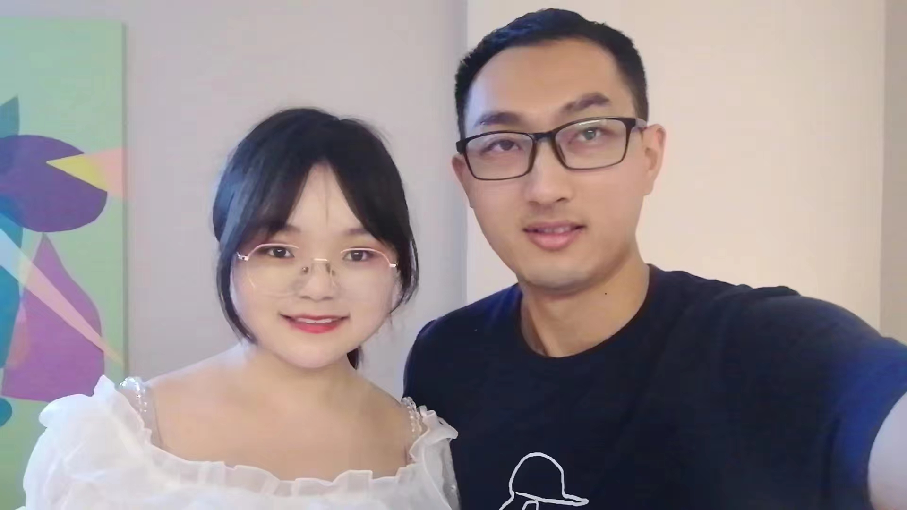
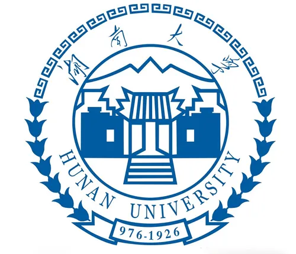
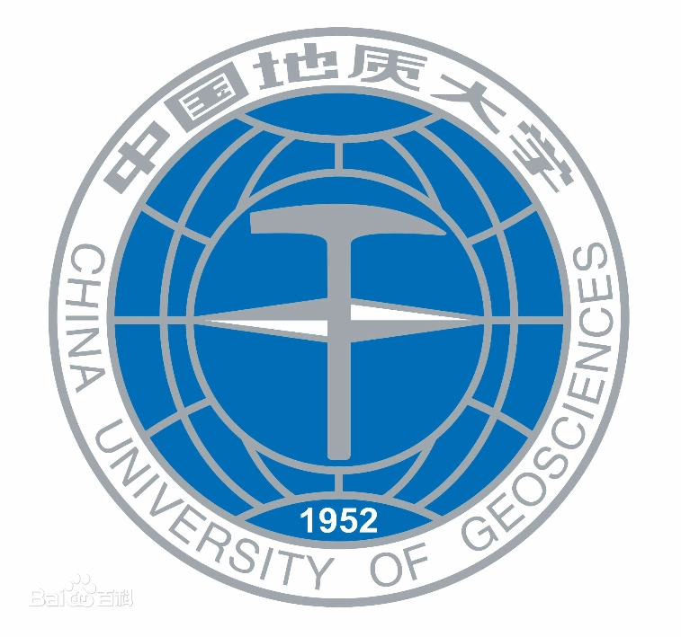
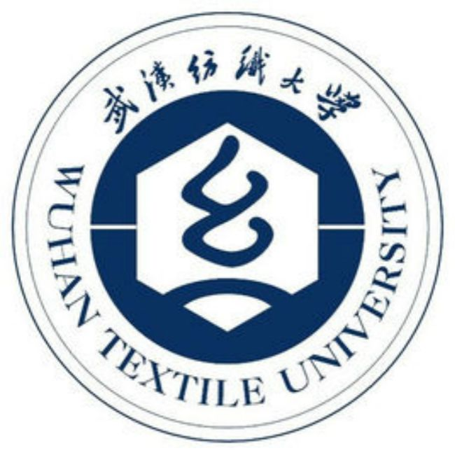

|  | 博士研究生,中共党员 |
我目前在湖南大学机器人学院攻读博士学位，师从刘海波教授。 本人已于2021年6月从中国地质大学（武汉） 自动化学院获得硕士学位。 在此之前, 我于2018年6月在 武汉纺织大学 电子与电气工程学院 通信工程专业获得了学士学位。
我的研究兴趣主要包括: 生成对抗网络、机器人学、深度学习、快照压缩成像、时域/空域超分辨率重建等。
|  | 博士 湖南大学 (2022.9 ~ 至今)
|
|  | 硕士 中国地质大学（武汉） (2018.9 ~ 2021.6)
|
|  | 本科 武汉纺织大学 (2014.9 ~ 2018.6)
|
Qin M, Zhang Z, Zhou X. Disentangled representation learning GANs for generalized and stable font fusion network[J]. IET Image Processing, 2022, 16(2): 393-406. [Code][PDF]
Qin M, Chen X. Restore the incomplete calligraphy based on style transfer[C]. 2019 Chinese Control Conference (CCC). IEEE, 2019: 8812-8817. [PDF]
陈鑫, 秦梦溪, 费婷, 肖哲, 周小雪. 一种基于动作捕捉系统的机械臂拟人化轨迹规划方法[P]. 湖北省： CN110815218A,2020-02-21.
基于压缩感知的时域超分辨光测图像获取方法（2022.7~至今）
基于深度学习的书法字体图像风格迁移与融合方法研究（2018~2021）
基于情感计算的音乐机器人智能作曲与演奏关键技术研究（2018~2021）